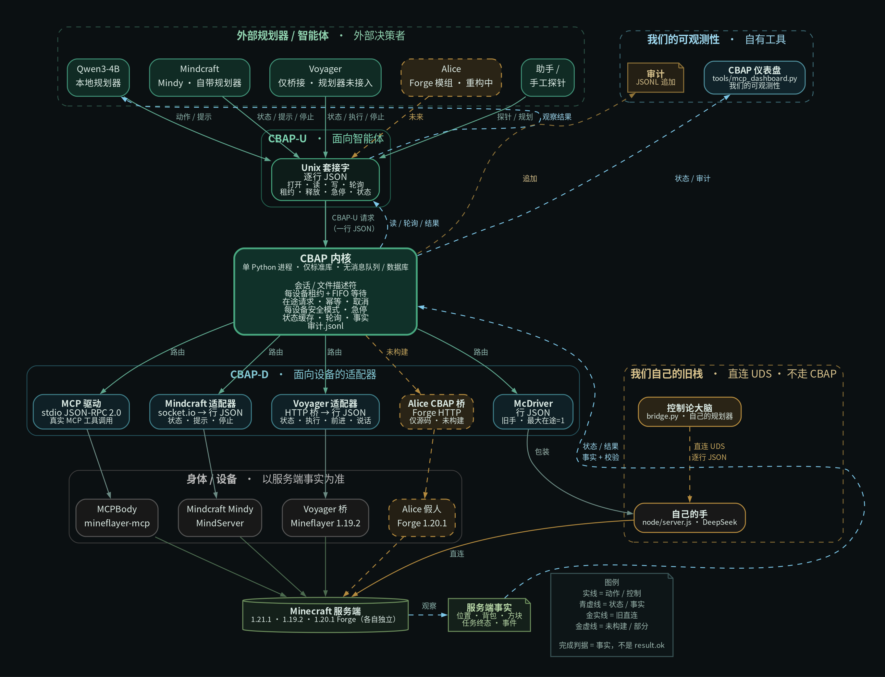

完成判据看事实
背包、坐标、方块、任务终态才算数。adapter 说成功、命令发出去了，都不算完成。
01 / WHAT IT IS
我们想验证的东西与 Minecraft 无关：一个 Agent 要在信息不完整、动作有代价、环境会变的世界里可靠地干活，需要什么样的接口与判据。Minecraft 只是低成本、可观测、可复现的沙盒。
背包、坐标、方块、任务终态才算数。adapter 说成功、命令发出去了，都不算完成。
同一设备同一时刻只有一个 writer；FIFO 等待、显式释放、每设备急停，不靠自觉。
主仓只依赖 driver 接口。Cyberdyne、MCP、Mindcraft、Voyager 各自是子仓，不写死进 Kernel。
02 / ARCHITECTURE
CBAP-U 面向 Agent；CBAP-D 面向设备；Kernel 在中间做租约、安全、取消和审计。完整结构以仓库中文架构图为准。

图例：实线 = 动作 / 控制；青虚线 = 状态 / 事实 / 结果；金实线 = 自己的旧直连；金虚线 = 未构建 / 部分。
03 / PROTOCOL NOTES
这些判据来自真实的竞争、断线、急停和恢复。
不是 result.ok。服务端位置、背包、方块和任务终态才是完成判据。
租约按设备隔离；等待 FIFO；release、estop、cancel 是不同语义。
听不懂、拿不准、参数缺，就拒绝执行并留下原因，不静默吞掉。
动作有账；在途请求和重连不会乱重放；危险状态可以急停。
不同 Agent 只实现 adapter 和设备契约。主仓保持薄，身体和规划器各自演进。
04 / CURRENT STATE
CBAP 控制面已通过 89 项 conformance；Alice 的 Forge bridge 源码保留，但未编译、未跑真实服务端，所以不算活跃子仓。
主仓 / 子仓边界
旧版脑 / 手、车厢、老祖思维和 M1–M7b 里程碑已经从主 README 移到 Cyberdyne 子链档案。主仓现在描述协议，不再把旧实验细节堆在首页。
当前状态
不把源码当成已验证。
05 / AGENT SUBREPOS
每个子仓拥有自己的 adapter、device / mapping、工具和 smoke test。主仓只负责接口与 conformance。
我们自己的旧脑 / 手直连栈。手可以被 McDriver 包成 CBAP 设备；旧协议仍在子链。
真实 MCP body。公开 MCP tools → CBAP read / write / poll / estop，MCPDriver 走 stdio JSON-RPC。
Mindy 自带规划器。CBAP 观察状态、投递 prompt、停止；不冒充低层动作驱动。
只接 Mineflayer bridge：state / exec / forward / say / stop。Voyager 的自治规划器和课程还没接。
Forge 1.20.1 最小 bridge 源码。未编译、未跑真实服务器，不假装是活跃子仓。
协议桥开销亚毫秒。真正慢的是 Minecraft 动作、Agent 规划和 LLM。
DETAILS / SOURCE / EVIDENCE
本站只是门面：不镜像文档，不接本地服务，不放运行数据。